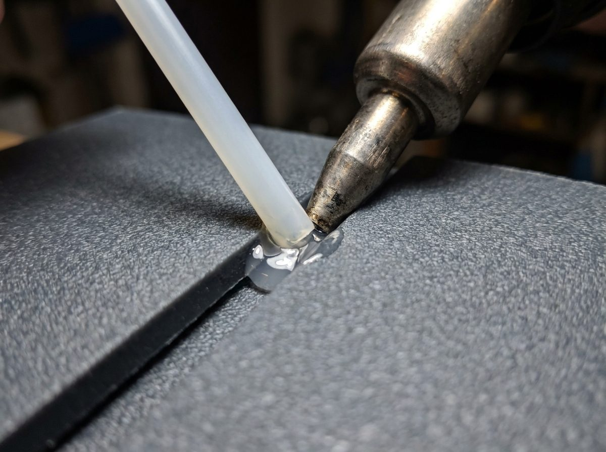

熱風溶着
熱風で母材と溶接棒を同時に加熱し、開先に沿ってビードを形成します。 細かい部位や複雑な形状の接合に向いています。
PP Welding / Plastic Fabrication
接着剤が効きにくいポリプロピレンを、母材と同じ樹脂で溶かして確実に接合します。 試作・少量生産の段階から、形にしたい構造をご相談ください。
Why PP Welding
ポリプロピレン（PP）は薬品や水に強く軽い一方で、表面エネルギーが低く接着剤が乗りにくい素材です。 PP溶着は、母材と同じ樹脂を熱で溶かして一体化させる接合方法。 接着剤に頼らないため、継ぎ目の強度と気密性を確保しやすく、 薬液まわりの部品や水を扱う構造物にも適しています。

Methods
板厚、継ぎ手の形、求められる強度や仕上がりに応じて、適した工法をご提案します。
熱風で母材と溶接棒を同時に加熱し、開先に沿ってビードを形成します。 細かい部位や複雑な形状の接合に向いています。
溶かした樹脂を押し出しながら盛り付ける工法です。 板厚のある部材や、長い溶接線を効率よく仕上げられます。
端面同士を熱板で溶かして圧着します。継ぎ目の凹凸が少なく、 すっきりした仕上がりになります。
既存部品の割れ、欠損、穴あきの補修にも対応します。 現物を確認したうえで、可否と方法をご提案します。
Applications
板材の切り出し、曲げ、溶着を組み合わせて、既製品では合わない形状を製作します。 現場に合わせた寸法での製作もご相談ください。


Flow
手書きのスケッチや現物からでも進められます。3D-CADによるデータ製作も社内で対応可能です。
用途、寸法、必要な強度をお伺いします。図面がない場合は現物や写真からでも構いません。
板厚や継ぎ手の取り方を含めて、作りやすく壊れにくい形をご提案します。
切り出し、曲げ、溶着を行い、必要に応じて仕上げ処理まで対応します。
Contact
土日も営業。価格、納期ご相談ください。